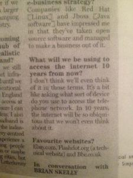

A non-prophecy from ten years ago
Something I said ten years ago comes back to not haunt me: in fact, I was quite pedestrian about the whole thing.
My friend Rich was house-cleaning and came across an interview that I did with the Irish media about ten years ago, while we were running our company, Aurium. One thing really jumped out at him was the answer I gave to one particular question:
Q: What will we be using to access the Internet 10 years from now?
A: I don't think we'll even think about it in those terms. It's a bit like asking what sort of device you use to access the telephone network. In 10 years the internet will be so ubiquitous that we won't even think about it.

I remember giving this interview, and it feels weird in a number of ways. Firstly, when you see an "expert" being interviewed in a newspaper, don't assume that he's there because of his expertise. He could simply be a randomer with a good PR firm, which is what I was: the article was "placed" as part of our public relations campaign. Secondly, I was right in terms of where the technology was going, but that wasn't due to any vision on my part: it was simply a function of being part of the development of that technology and seeing from the inside where it could go. There are plenty of alternative futures where things happened differently and the internet didn't take off as it did. Had we had a major security crisis or breach of privacy in the first few years, that might have killed people's confidence enough to damp-down the uptake.
What really struck me, though, was exactly how pervasive the technology did become. As it happens I'm in London on business with my colleague Graeme, and it's instructive to look at all the things we did on the internet -- and indeed from mobile gadgets. Firstly, I checked-in on the British Airways cellphone app and so didn't need a printed boarding pass. (This is an application we first suggested ten years ago, incidentally: a boarding pass is just a token, so why not text someone a long number to identify themselves with?) Then we arrived not knowing where the hotel was, but a combination of the Tube Map app and Google Maps soon directed us via train and foot, from Gatwick airport to Pimlico. We looked up places to drink and a place for dinner the next day using TripAdvisor, again navigating there with Google Maps, and made recommendations for the various places for other travellers. (Oh, and incidentally checked in for the return flight while sat in the pub -- very civilised, I must say.) We found a coffee shop while we were waiting for our meeting, which itself took place in a venue whose location we also didn't know relative to our hotel. I collected the different bookings and details in TripIt, which shared them into my Google Calendar so I didn't have to take note of them. And I took some pictures and shared them on Facebook.
But actually the most surprising thing isn't the technology, or the mobile device, or the fact that it all actually works together in practice: it's that real people actually do it, and I don't think I'm unique in using all this mobile internet technology when travelling. We pretty much take for granted the idea of finding our way in a new place without preparation: neither Graeme nor I ever even thought about how we'd find the hotel or the meeting venue beforehand, we just got up and did it.
Looking back, I'm not surprised we (the technology community) got the technology to work; I'm not even really surprised at the availability of mobile internet and a load of apps to make use of it; but I must confess to being slightly surprised that at the acceptance of all the gadgetry amongst the general population, enough to generate an ecosystem of companies who work together and create more value from their interoperability. It's something we always said would happen, but it's quite strange to see it in operation, and it's a positive achievement we shouldn't forget about.
Comments
Comments powered by Disqus